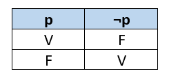

Conteitos de Lógica Proposicional, fundamentais para a construção de algoritmos e para o desenvolvimento do pensamento computacional.
Lógica Proposicional
A lógica é o estudo sobre a natureza do raciocínio e do conhecimento. Ela é usada para formalizar e justificar os elementos do raciocínio empregados nas demonstrações / provas de teoremas.
A lógica clássica se baseia em um mundo bivalente ou binário (visão restrita do mundo real), onde os conhecimentos são representados por sentenças que só podem assumir dois valores verdade (verdadeiro ou falso). Portanto, nesse contexto, uma demonstração é um meio de descobrir uma verdade pré-existente deste mundo.
A lógica é amplamente utilizada na computação, em diversas áreas, como inteligência artificial, projetos de circuitos lógicos, bancos de dados relacionais, sistemas distribuídos, além de serem utilizados na construção de soluções algorítmicas e nos processos de teste e validação de código, dentre outros.
A Lógica proposicional, é uma forma mais simples de lógica. Nela os fatos do mundo real são representados por sentenças sem argumentos, chamadas de proposições.
Uma Proposição é uma sentença declarativa que pode ser verdadeira (V) ou falsa (F), nunca as duas coisas ao mesmo tempo.
Exemplo:
O Brasil fica na américa do sul (Uma proposição com valor verdadeiro);
Dois mais dois é igual a quatro (Uma proposição com valor verdadeiro);
Um ano tem treze meses (Uma proposição com valor falso);
Roraima é a capital do Brasil (Uma proposição com valor falso);
As frases que não podem ser classificadas como verdadeiras ou falsas, não são proposições, assim como:
Que dia é hoje?
Abra a porta.
Observe que os dois exemplos não podem assumir valores de verdadeiro ou falso, portanto não são proposições.
Entre as frases que não são proposições podemos incluir as frases interrogativas: “quantos anos você tem?” e frases imperativas “preste atenção na aula!”
Agora para a frase “a porta está aberta”, seu resultado ou valor lógico (verdadeiro ou falso), irá depender do seu contexto ou problema apresentado.
Uma proposição composta é formada pela combinação de duas ou mais proposições, cada uma das proposições é unida através dos chamados conectivos lógicos para formar uma nova proposição, os conectivos lógicos utilizados na informática são: não, e, ou, se;
Exemplos:
p: Pedro não é programador;
q: João é estudante E Maria professora;
r: Amanhã fará chuva OU sol;
s: Se João nasceu em Belo Horizonte, então João é Mineiro;
Seja p e q duas proposições quaisquer:
Se temos a proposição p: “Pedro é programador”, ao negar a proposição temos ¬p (não p) : “Pedro não é programador”, ao negar novamente, ¬(¬p): “Não é verdade que Pedro não é programador”, que é a mesma coisa que p: “Pedro é programador”.
Portanto a negação da negação de p afirma o mesmo que p.
Escute essa aula: Lógica proposicional
Tabela Verdade
A tabela verdade é utilizada na lógica para definir o valor lógico de uma proposição, através desta ferramenta é possível saber se uma proposição composta ou sentença, é verdadeira ou falsa, de acordo com o seu conectivo lógico.
Negação ¬:
Nesta operação lógica, seu resultado lógico é o inverso do valor lógico de sua proposição, ou seja, retorna falso se a proposição for verdadeira, e verdadeiro se a proposição for falsa.
Considerando novamente a proposição p: “Pedro é programador”, sua negação ¬p é: “Pedro não é programador”.
A tabela verdade de uma proposição simples e sua negação é dada por:

Note que para uma proposição só temos duas opções de valores lógicos validos V e F.
Conjunção, Conectivo E:
Nesta operação lógica que utiliza o símbolo ^, seu resultado será verdadeiro se e somente se todas as proposições forem verdadeiras.
Exemplo:
p: Pedro é programador.
q: Pedro mora em Belo Horizonte.
Ambas proposições podem assumir o valor lógico de V ou F.
A proposição composta de conjunção p ^ q: “Pedro é programador e mora em Belo Horizonte”, pode assumir quais valores lógicos?
Para responder essa questão devemos preencher a tabela verdade destas proposições com a conjunção e, note que para duas proposições temos 2²=4 opções de valores lógicos.
Note que para o conectivo E, o resultado só é verdadeiro quando as duas proposições forem verdadeiras, sendo falso em qualquer outro caso.
Portanto, na conjunção E, quando qualquer uma das proposições forem falsas, seu resultado será falso.
Basta lembrar, para ser verdadeiro tem que ser “Um E o outro”;
Para o nosso exemplo p^q: “Pedro é programador e mora em Belo Horizonte”, só será verdadeiro se p: “Pedro é Programador” e q: “Pedro mora em Belo Horizonte” forem verdadeiras.
Disjunção, conectivo OU:
Nesta operação lógica que utiliza o símbolo V, seu resultado será verdadeiro quando pelo menos uma das proposições forem verdadeiras.
Exemplo:
p: O sol é uma estrela.
q: 3 é um número par.
Ambas proposições podem assumir o valor lógico de V ou F.
Neste caso a primeira proposição p tem valor lógico verdadeiro V, a segunda possui valor lógico falso F.
A proposição composta de disjunção p V q: “O sol é uma estrela ou 3 é um número par”, pode assumir quais valores lógicos?
Para responder essa questão devemos preencher a tabela verdade destas proposições com a disjunção ou, note que para duas proposições temos 2²=4 opções de valores lógicos.
Note que para o conectivo OU, o resultado só é falso quando as duas proposições forem falsas, sendo verdadeiro em qualquer outro caso.
Portanto, na conjunção OU, quando qualquer uma das proposições forem verdadeiras, seu resultado será verdadeiro.
Basta lembrar, para ser verdadeiro tem que ser “Um OU o outro”;
Para o nosso exemplo p V q: “O sol é uma estrela ou 3 é um número par”, só será falso se p: “O sol é uma estrela” e q: “3 é um número par” forem verdadeiras. No caso temos um V ou F = V.
Implicação/Condicional, conectivo SE:
Nesta operação lógica que utiliza o símbolo →, seu resultado será falso quando a proposição antecedente for verdadeira e a consequente for falsa.
Em uma implicação ou proposição condicional, o antecedente é a proposição que se encontra entre o “se” e o “então”, ou antes do símbolo →. Já o consequente se encontra após o “então” ou o símbolo →.
Uma proposição condicional afirma que seu antecedente implica seu consequente.
Se p então q.
Exemplo:
p: Está chovendo.
q: Existem nuvens.
Ambas proposições podem assumir o valor lógico de V ou F.
A proposição composta de implicação ou condicional p → q: “Se está chovendo então existem nuvens”, pode assumir quais valores lógicos?
Para responder essa questão devemos preencher a tabela verdade destas proposições com a implicação se, note que para duas proposições temos 2²=4 opções de valores lógicos.
Note que para o conectivo SE, o resultado só é falso quando a proposição antecedente for verdadeira e a consequente for falsa, sendo verdadeiro em qualquer outro caso. V → F = F.
A veracidade da proposição condicional está relacionada a p, o seu não cumprimento (p=F), desobriga a analise de q, pois se não está chovendo, então podem ou não haver nuvens, o consequente não importa.
Para o nosso exemplo p → q: “Se está chovendo então existem nuvens” é verdadeiro (V → V= V), só será falso se p: “Se está chovendo então não existem nuvens” (V → F= F).
Construindo uma tabela verdade
Para construir uma tabela verdade para um número determinado de proposições é necessário preenche-la com os valores lógicos possíveis (Verdadeiro ou Falso) cara cada uma das proposições, e então preencher os valores lógicos da proposição composta de acordo com seu conectivo.
O numero de linhas da tabela verdade está relacionado a quantidade de proposições que a compõe. Uma tabela verdade com N proposições será composta por 2^n (2 elevado a n) linhas.
Por exemplo a proposição composta “O está chovendo e existem nuvens” possui duas proposições portanto sua tabela verdade terá 4 linhas como nos exemplos do conectivo. Já a tabela verdade de uma proposição composta por 3 proposições como: “Pedro é programador e mora em Belo Horizonte e mora sozinho” terá 8 linhas.
Para comtemplar todas as variações de verdadeiros e falsos, cada coluna desta tabela deva ser preenchida por 2^n-k, valores de verdadeiro e valores de falsos, com k partindo de 1 e sendo incrementado ate n.
Ou seja, metade das linhas de uma coluna como verdadeiro e metade como falso, e sendo divididas até terminar as colunas.
Observe o exemplo:
Ao construir a tabela verdade da proposição composta P(p,q,r)=p^q^r temos:
1º passo: descobri o número de linhas.
Como são 3 proposições temos: 2^3 = 8 linhas;
Criamos então a tabela e preenchemos com as proposições:
2º passo: Seja k, o número de proposições, cada coluna é preenchida com 2^k-1, valores de verdadeiro e falso. Ao mover para a coluna da direita o valor de k é decrementado mais uma vez, 2^k-2, e assim por diante.
Preencher metade das linhas com verdadeiro e metade com falso 2^3-1 = 2^2 = 4, portanto, 4 linhas com verdadeiro seguidas de 4 linhas com falso.
A segunda coluna terá 2^3-2 = 2^1 = 2, portanto 2 verdadeiros seguidos de 2 falsos, até completar.
A terceira coluna terá 2^3-3= 2^0=1, portanto 1 verdadeiro seguido de 1 falso, até completar.
Note que a primeira coluna é preenchida, com a metade de linhas sendo verdadeiro e a outra metade sendo falso, para a segunda coluna é como se dividíssemos a coluna em duas, preenchendo novamente as “metades” com verdadeiros e falsos de forma igual, assim sucessivamente.
3º Passo: preencher os valores lógicos da proposição composta de acordo com seu conectivo.
No exemplo como é o conectivo E, apenas quando todos forem verdadeiros é que a proposição composta será verdadeira.